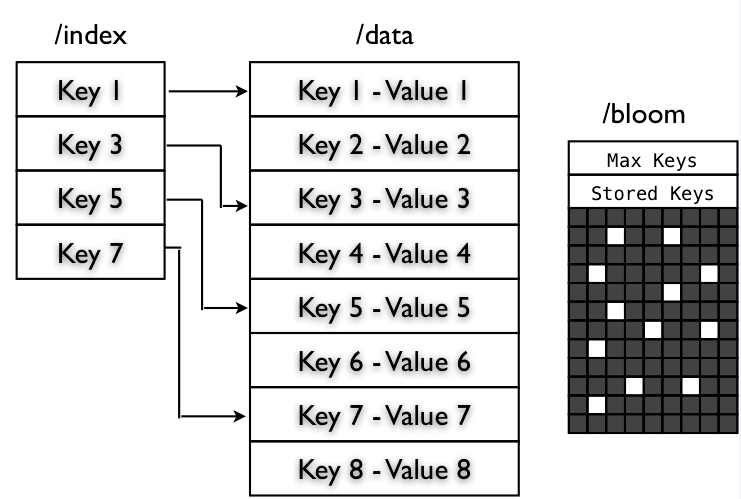

Базы данных: введение, часть седьмая
Илья Тетерин
2012-11-12
(use arrow keys or PgUp/PgDown to move slides)
Илья Тетерин
2012-11-12
(use arrow keys or PgUp/PgDown to move slides)
поисковая система своими руками
обратный (инвертированный индекс)
Lucene
HDFS
Задача: есть коллекция текстовых документов
Хочу искать по разным словам в них
Что-то типа Google или Яндекса ...
Папа, подари мне Яндекс - кратко, по русски, "сказка". Самый доходчивый документ для входа в мир поисковика :) - морфология, как искать, эмуляция через SQL etc.
Меня через эту статью "вводили", когда я пришел в Яндекс и _ничего_ не понимал.How to crawl a quarter billion webpages in 40 hours
by Michael Nielsen on August 10, 2012
More precisely, I crawled 250,113,669 pages for just under 580 dollars in 39 hours and 25 minutes, using 20 Amazon EC2 machine instances.
Зачем? Хотелось понять какие ресурсы нужны, дабы обойти заметную часть internet ...
Где взять железо? - Арендуем 20 серверов (AWS: Extra Large). (у них выше получилось колво урлов на доллар :) )
15Gb RAM / 4 core cpu / 1.6Tb hdd / Ubuntu - от 15 рублей в час за машину
Где взять урлы? - Возьмем 1 млн урлов c Alexa.com (10Mb zip), а там по ссылкам с них на другие сайты.
100009,ndonline.com.br 100010,zeusnews.it 100011,auditmedia.es 100012,pavel-kolesov.ru 100013,eyowo.com
А программы? - А сам напишу на Python ...
Разложим домены по серверам как server = hash(domain) % 20 .
Внутри сервера разложим полученную группу хостов на 141 треда (подобрано экспериментально - загрузить CPU, так как в python io блокирующееся ).
Для каждого домена заведем свой файлик из его урлов и дописываем в конец новые.
В каждом файле отслеживаем позицию при помощи Redis
Нельзя слишком часто дергать чужие сайты - заведем map(domain->lastVisitTime) и выжидаем между запросами
Разработка итеративна - запустил, почитал ошибки, поправил, перепустил
Данных много - решил качать только html и обрезать страницы по 200Кб (Google утверждает, что с картинками страница 300-450Кб)
Складировал данные - просто на диск сервера (1.6Tb на каждом хосте)
$512 за 40 часов 20-ти серверов + $65 за 500Gb _исходящего_ траффика (http get запросы) = $580, 40 часов и 250 млн страниц
Amazon не берет денег за "входящий" траффик - иначе бы много террабайт скачанных данных были бы заметны в расходах.
* получить документы (скачать)
* подготовить данные (почистить)
* сделать базу документов (сохранить)
* придумать как искать по ним (придумать поиск)
* сделать обработку запросов пользователя (очистка, падежи етс)
* отдать документы (веб сервер?)
В случае web коллекция велика и связана ссылками.
Пишем робота (web-паук / кравлер / crawler), который:
- скачивает страницу
- сохраняет страницу для обработки
- получает из нее ссылки на другие страниц
- идет за теми страницами ... и так по кругу
В случае локальной сети или предприятия - коллекцию нам могут выдать сразу
веб-граф, метаинформация, архив документов
Цитата из Архитектура поискового кластер Яндекса Den Raskovalov: 10^12 урлов ( триллион / миллион миллионов ) / 10^10 документов ( 10 тысяч миллионов ).
btw: РИА Новости 23.09.2011: Количество пользователей Facebook превысило 800 миллионов
Как хранить архив?
Можно в файловой системе, а можно в аналоге haystack - как byte streams, причем вместо уменьшенных thumbnails можно хранить "сниппеты". Доступ по id документа и типу "тела".

Ответ: инвертированный индекс
Яндекс рекомендует:

Introduction to Information Retrieval, Cambridge University Press. 2008. курс лекций, на английском, в свободном доступе
Введение в информационный поиск - перевод на русский, вычитанный в Яндексе. Ссылка на ozon.ru.
Как работают поисковые системы Илья Сегалович, Яндекс
Рекомендации лучших Яндексоидов ... :)
Входящий документ разбиваем на токены (слова)
Для каждого токена делаем список документов, в которых он встречается
Список документов сортируем по возрастанию id документа.
Поиск:
* на входе слово "мармелад"
* ищем токен "мармелад" в нашем списке токенов
* берем с него список id документов
* вот наш ответ - см. список
Поиск мармелад и яблоко:
* аналогично, но два списка
* списки пересекаем (merge отсортированных последовательностей = o(n) )
7:мармелад - { 107; 200; 320 ... }
109:яблоко - { 68; 80; 107; 190; 202; 320 ...
мармелад и яблоко - { 107; 320 ... }
А как хранить такой индекс?
1. Словарь:
Количество слов - в Oxford English Dictionary - 600 000 слов ... но там нет фамилий, имен, городов етс. => миллионы токенов => указатель int 2^32 может быть мало
Само слово надо хранить - это еще 20? unicode символов
(wiki: самое длинное слово: энтерогематогепатогематопульмоэнтерального)
2. Постинг лист (внутри Яндекса он называется "кишка" - ибо очень длинный :):
идентификатор токена, потом ссылки на документы
Количество документов - 10^10 => указатель long 2^64
Стемминг, лемминг, классы эквивалентности, морфология токенов (шел, шла, иду, идет, идем етс)
Словарь токенов как массив фиксированной длины - мнооого памяти, не понятно, сколько памяти на токен, зато бинарный поиск с прямым доступом быстрый, за o(ln n).
Изначально размер посчитан как 400 000 токенов * ( 20 + 4 + 4 [term, termId, docId]) = 11.2 Мбайт ( 4 byte = 2^32 = 4 Гбайт)
А если токены сложить в одну сплошную строку, а в массиве держать указатели на строку? Указатель на следующий токен == конец предыдущего токена?
{мармелад яблоко яблоневый яблочный} { 7:1, 109:9 ... }
Размер падает до 400 000 * ( 4 + 4 + 3 + 8 [docId, termFreq, termBitId, avgBodyLength]) = 7.6 Мбайт (частота, указатель на постинг, ссылка на токен в строке, средняя длина токена)
А что если хранить блоками по 4 токена? (экономим указатели 4 байт)? Заменим ссылку на токен на ссылку на блок, а в блоке последовательный перебор: {8мармелад 6яблоко 9яблоневый 8яблочный} { 7:1, 109:X, 120:X, 130:28, ... } - поджали до 7.1 Мбайта
"Фронтально" пакуем - начала слов повторяются, заменяем повторы на #, а * - отрезает повторяющуюся часть от неповторимой в первом слове: {8мармелад 6ябло *ко 5#невый 4#чный} - получим 5.9 Мбайт.
Много длинных последовательностей чисел... причем большой разрядности - 2^64
А если вместо абсолютной ссылки на документ держать относительную ?
109:яблоко -
{ 68; 80; 107; 190; 202; 320 ...
vs
{ 68; 12; 27; 83; 19; 118 ...
Токены по разному встречаются в документах - некоторые в каждом первом (the, is, а, и, но), некоторые очень очень редко - т.е. напрямую размер указателя все равно будет того же порядка - 2^64
Ответ: побитовое кодировние - коды разной длины для разных смещений - интересно и детально в книге
Исходная коллекция - статьи Reuters за год с 20.08.96 - 19.08.97:
- 800 000 документов
- 200 лексем в документе
- 400 000 токенов
- 960 Мбайт чистого текста
- 3.6 Гбайт данных (xml/html/текст)
- словарь из 11.2 Мбайт - 5.9 Мбайт
- постинги - из 400 Мбайт в 101 Мбайт
Из 4 Гбайт разрозненных данных получили двух компонентную структуру для поиска (termIds + docIds) ... и она полностью влезает в небольшую память (128Мбайт)
Для работы поисковой системы нужна своеобразная база - инвертированный индекс.
Для понимания характеристик - надо знать как оно устроено.
Будет понятно сколько нужно памяти, какой скорости ожидать етс.
Всегда компромиссы: в словаре o(ln n) при прямом дереве vs o(ln(n/4)) + o(4) при блоках по 4 токена
Сложно ... и интересно
Если "своё" - понимаешь и тюнишь, если чужое, то пользуешь и надеешься ...
Готовая, общедоступная библиотека полнотекстового поиска на Java
http://lucene.apache.org/java/docs/index.html
Используется: в 200+ проектах (PoweredBy)
... включая Twitter
Для меня: это внешний индекс, позволяющий искать документы
Документы могут храниться целиком внутри Lucene, но при больших объемах данных храним внутри Lucene немножко полей плюс указатели-пути до документов, а сами документы снаружи
Алгоритм работы:
* кладем документ в хранилище (haystack? :))
* отдаем документ в Lucene на индексацию
NB: у нас два процесса -> распределенное хранение -> "mind the CAP"
Для хороших результатов - нужен будет свой стеммер для русского языка
Стеммер - обрезальщик слов до корневой формы (например яблочный/яблочная -> яблочн).
Используется когда поиск не должен различать окончания
LuceneTutorial.com: Lucene in 5 minutes
Запуск примера: wget http://repo1.maven.org/maven2/org/apache/lucene /lucene-core/4.0.0/lucene-core-4.0.0.jar /lucene-analyzers-common/4.0.0/lucene-analyzers-common-4.0.0.jar /lucene-queryparser/4.0.0/lucene-queryparser-4.0.0.jar mkdir lib mv *.jar lib/ wget http://www.lucenetutorial.com/code/HelloLucene.java javac -cp ".:lib/*" HelloLucene.java java -cp ".:lib/*" HelloLucene title=Lucene Результаты: Found 2 hits. 1. 193398817 Lucene in Action 2. 55320055Z Lucene for Dummies 76 строк включая все импорты ...
// 1. create the index
Directory index = new RAMDirectory();
IndexWriterConfig config = new IndexWriterConfig(Version.LUCENE_40, analyzer);
IndexWriter w = new IndexWriter(index, config);
addDoc(w, "Lucene in Action", "193398817");
addDoc(w, "Lucene for Dummies", "55320055Z");
addDoc(w, "Managing Gigabytes", "55063554A");
addDoc(w, "The Art of Computer Science", "9900333X");
w.close();
private static void addDoc(IndexWriter w,
String title, String isbn) throws IOException {
Document doc = new Document();
// simple field, splitted to tokens
doc.add(new TextField("title", title, Field.Store.YES));
// use a string field for isbn because we don't want it tokenized
doc.add(new StringField("isbn", isbn, Field.Store.YES));
w.addDocument(doc);
}
// 2. query String querystr = args.length > 0 ? args[0] : "lucene"; // the "title" arg specifies the default field to use // when no field is explicitly specified in the query. Query q = new QueryParser(Version.LUCENE_40, "title", analyzer).parse(querystr); // 3. search IndexReader reader = DirectoryReader.open(index); IndexSearcher searcher = new IndexSearcher(reader); int hitsPerPage = 10; TopScoreDocCollector collector = TopScoreDocCollector.create(hitsPerPage, true); searcher.search(q, collector); ScoreDoc[] hits = collector.topDocs().scoreDocs; // 4. display results System.out.println("Found " + hits.length + " hits."); for(int i=0;i<hits.length;++i) { Document d = searcher.doc(hits[i].doc); System.out.println((i + 1) + ". " + d.get("isbn") + "\t" + d.get("title")); } // reader can only be closed when there is no need to access the documents any more. reader.close();
Работал в Excite, Apple, Xerox PARC, Yahoo, Cloudera...
July 2009 - выбран в совет директоров Apache Software Foundation, September 2010 - предстедатель совета директоров.
Патенты - 9 штук с 1991-по 1996 года в области поисковых технологий.
Автор open-source проектов:
Lucene - библиотека полнотекстового поиска
Nutch - поисковый сервер, включающий кравлер и http сервер для результатов
Hadoop - набор технологий для MapReduce вычислений
Распределенная файловая система, устойчиво работающая поверх обычных компьютеров, изначально разработанная для Nutch.
ps: очень похоже по архитектуре на Google File System (GFS). research.google.com/archive/gfs-sosp2003.pdf

Хранит информацию имя файла - список блоков - адреса блоков в кластере
Single point of failure
Для надежности использует Snapshot, read ahead log (EditLog) etc
Размер кластера, вернее количество файлов, определяется мощностью NameNode - теи, сколько мета-информации выдержит NameNode
Просто хранит понумерованные блоки по 64Mb
Блоки складываются в каталоги, с оптимальной нарезкой на подкаталоги, дабы не было 10к файлов в каталоге
Без метаинформации - блоки лишены смысла = мусор
Если на DataNode количество свободного места меньше порога - может быть принято решение о "миграции" блока на более свободную машину.
При миграции будет обновлена информация в NameNode
Hadoop: The Definitive Guide, глава 4 - Hadoop I/O
Hadoop I/O: Sequence, Map, Set, Array, BloomMap Files
Split компрессия - у нас файл на 1Гб, блоки по 64Мб. Если можем split, то берем 10-ый блок и сразу с ним работаем. Если не поддерживается split - придется брать блоки с 1-го и последовательно распаковывать до нужного.
Можно свою сериализацию - хоть Thrift
последовательность ключ-значение
произвольный порядок ключей
запись - writer.put(key, value);
чтение - full scan при помощи next()
или sync(position) - система встанет в заданную позицию и от нее будет искать точки синхронизации
При создании в файл можно вложить пары строк metaKey->metaValue, для описания файла (metainfo)
SequenceFile используется как строительный блок для всех других форматов.

Header: 4 bytes: SEQ + byte версии Text - Key class name Text - Value class name Boolean - is compressed Boolean - is block compressed 16 bytes - sync метка (генерится на каждый файл своя) Record: int - key length + value length int - key length bytes[] key bytes[] value Block: int - колво записей в блоке int - длина ключей bytes[] - ключи int - длина блока значений bytes[] - значения Sync: (sync ставится раз в Н записей (1% от данных, не более)) 16 bytes
Данные должны быть отсортированы по возрастанию ключа - вставка ключа не по порядку = Exception
Состоит из двух sequence файлов:
- /data - обычный seq. файл key-значение
- /index - (key:long - позиция в файле /data)
Рядом с файлом данных - новый файл индекса
Можно lookup (подглядывать) по ключу

Кстати - по умолчанию только каждый 128-ой ключ выкладывается в index файл - нельзя даже посчитать колво ключей
Если индекс файл очень большой - при работе можно брать только каждый 2-ой (256 записей) или 4-ый (1024 записи) ключ из индекса
SetFile - сделан поверх MapFile
есть операция append(key), значение всегда null
ArrayFile - сделан поверх MapFile
есть операция append(value), а ключ назначает врайтер как count++
BloomMapFile - в момент закрытия файла на запись рядом пишем файл /bloom, в который складываем Bloom filter ключей, что есть в файле.
Bloom filter - заводим большую битовую последовательностьи (4096 бит или больше).
Когда кладем - для каждого key cчитаем значения для разных N hash-ей h1..hn, и каждую побитно OR записываем в буфер (выставляем 1-чки)
Когда проверяем - считаем h1..hn и проверяем что все 1 в hx не содержат 0 в буфере

Получается структура, позволяющая быстро дать ответ "нет значения" и с некоторой вероятностью обмануть "есть значение". Вероятность ошибки определяется качеством и количеством hash функций и размером bloom фильтра. Можно поднять до миллионов бит, если надо.